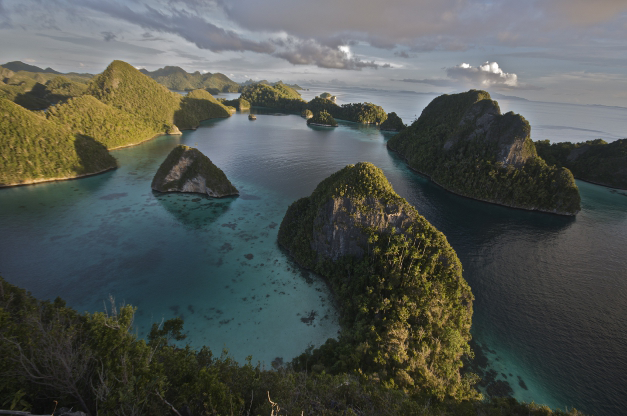
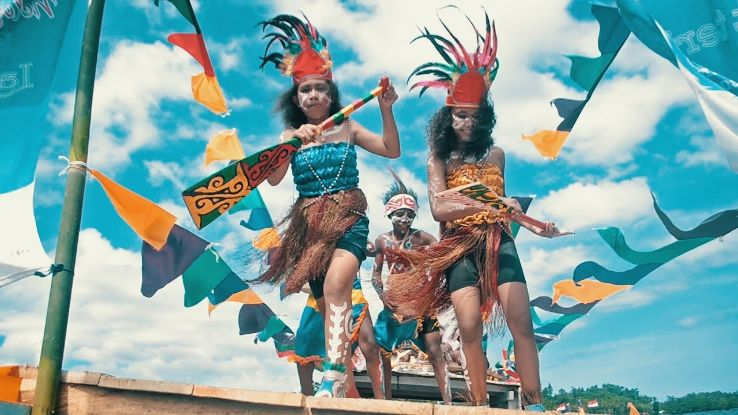

profile raja ampat

Asal mula nama Raja Ampat menurut mitos masyarakat setempat berasal dari seorang wanita yang menemukan tujuh telur. Empat butir di antaranya menetas menjadi empat orang pangeran yang berpisah dan masing-masing menjadi raja yang berkuasa di Waigeo, Salawati, Misool Timur dan Misool Barat. Sementara itu, tiga butir telur lainnya menjadi hantu, seorang wanita, dan sebuah batu.
Dalam perjalanan sejarah, wilayah Raja Ampat telah lama dihuni oleh masyarakat bangsawan dan menerapkan sistem adat Maluku. Dalam sistem ini, masyarakat sekumpulan manusia. Tiap desa dipimpin oleh seorang raja. Semenjak berdirinya lima kesultanan muslim di Maluku, Raja Ampat menjadi bagian klaim dari Kesultanan Tidore. Setelah Kesultanan Tidore takluk dari Belanda, Kepulauan Raja Ampat menjadi bagian klaim Hindia Belanda.
wisata raja ampat

Wisata Raja Ampat di Papua menawarkan sejumlah objek wisata yang sangat diminati oleh para wisatawan mancanegara pada khususnya, yakni diving. Kegiatan diving (penyelaman bawah laut) dan snorkeling di Raja Ampat akan menunjukkan keindahan alam bawah laut Wisata Raja Ampat di Papua yang begitu mempesona, dengan berbagai jenis spesies ikan serta terumbu-terumbu karang yang hidup natural. Diving di Raja Ampat akan menunjukkan kepada Anda berbagai aneka spesies ikan yang bahkan belum pernah Anda ketahui sebelumnya. Ingat, 75% spesies ikan dunia berada di Raja Ampat.
Paling sedikit terdapat 1500 spesies ikan, 537 spesies koral, dan 699 hewan tak bertulang belakang yang dapat Anda temukan di alam bawah laut Raja Ampat. Untuk diving, Anda akan ditemani oleh ahlinya dan menggunakan peralatan menyelam yang lengkap. Jika Anda pernah melakukan diving di pantai-pantai lain, maka Anda akan begitu takjub terhadap keindahan bawah laut Raja Ampat Papua. Terumbu karang yang hidup menjadi tempat sumber makanan ribuan spesies ikan dan satwa laut lainnya. Ekosistem yang sangat natural dan demikian mempesona inilah yang membuat Raja Ampat dijuluki sebagai Amazon Lautan Dunia.
festival bahari

Festival Bahari Raja Ampat diadakan di Ibukota Kabupaten Raja Ampat, Waisai yang berada di Pulau Waigeo. Pagelaran utama festival bahari tersebut difokuskan kepada wisata bahari. Yang salah satunya penyelaman di lokasi Diving yang masuk dalam 10 besar Lokasi penyelaman terindah di Dunia.
Festival Bahari ini dilaksanakan di Pusat Ibukota Waisai, yang letaknya 3 jam perjalanan speedboat dari Kota Sorong Papua. Yang menarik dari Festival ini adalah, mereka mengundang seni dan budaya dari kabupaten lainnya di Papua. Selain itu Kabupaten Wakatobi juga diikutkan serta dalam Festival Bahari ini.
Beberapa rincian festival yaitu Lomba Foto Bawah Laut, Lomba Perahu Dayung, orientasi bawah air, olahraga pantai seperti voli dll, dan atraksi budaya lokal. Atraksi budaya lokal akan ditampilkan oleh masyarakat Raja Ampat dan peserta dari kabupaten lain.
Biasanya Festival Bahari Raja Ampat ini diadakan pada pertengahan tahun sekitar bulan Agustus, sangat menarik untuk pergi ke Raja Ampat pada saat Festival. Karena banyak sekali tarian dan budaya yang ditampilkan di festival ini. Salah satunya adalah atraksi Tari – tarian khas daerah Papua, dan yang sangat menarik untuk saya adalah banyaknya makanan khas Papua yang dimunculkan disini.